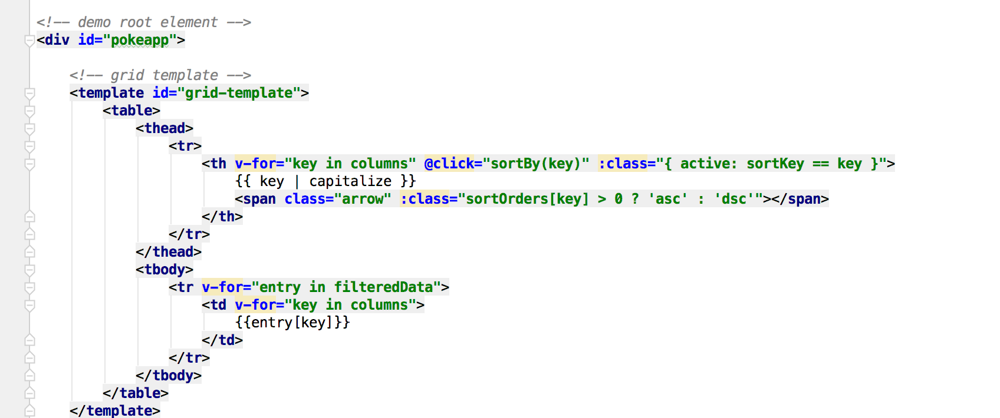

To start implementation of the Pokedex we would have to think about what templates will be used if you are thinking about using it multiple times in the future. We know that we need to create a pokeapp grid based template to store all the data being inserted. So, it is beneficial to program the html template first to get an understanding of the layout.
NPM is the recommended installation method when building large scale applications with Vue. It pairs nicely with module bundlers such as Webpack or Browserify. Vue also provides accompanying tools for authoring Single File Components.
$ npm install vue
Vue.js provides an official CLI for quickly scaffolding ambitious Single Page Applications. It provides batteries-included build setups for a modern frontend workflow. It takes only a few minutes to get up and running with hot-reload, lint-on-save, and production-ready builds:
#install vue-cli
$ npm install --global vue-cli
#create a new project using the "webpack" template
$ vue init webpack my-project
# install dependencies and go!
$ cd my-project
$ npm install
$ npm run dev
Important: the built files in GitHub's /dist folder are only checked-in during releases. To use Vue from the latest source code on GitHub, you will have to build it yourself!
git clone https://github.com/vuejs/vue.git node_modules/vue
cd node_modules/vue
npm install
npm run build
$ bower install vue